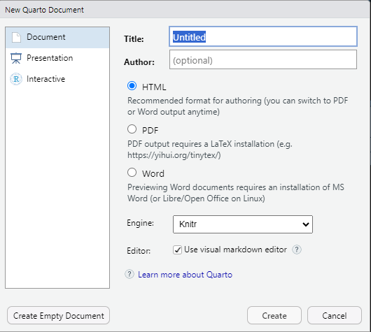
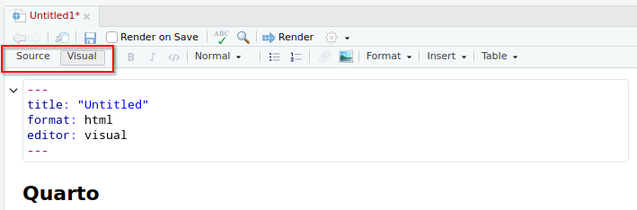

install.packages("quarto")9 Reportes dinámicos
9.1 Programación literaria
Es un paradigma de programación introducido por Donald Kunth en 1984 mediante el cual la explicación del código de programación se da en lenguaje natural (i.e. español) intercalado con fragmentos de código que puede ejecutarse.
Así, a diferencia de código fuente donde todo lo que no sea código debe ir con etiquetas de comentario para que no sea ejecutado, en R usando el símbolo #, en programación literaria el texto se escribe sin etiquetas y las celdas o bloques de código o chunks se delimitan con caracteres especiales.
Este paradigma es muy utilizado actualmente, especialmente en investigación reproducible y ciencia de datos poder documentar los procedimientos analíticos y generar informes dinámicos.
Existen varios softwares que permiten implementar este paradigma: swave para LaTeX, R Markdown para R, y recientemente Quarto para varios lenguajes, entre ellos R.
9.2 Quarto
Quarto es una versión avanzada de generación de R Markdown desarrollada por Posit, que admite múltiples lenguajes y ofrece numerosas características y capacidades nuevas. Al igual que R Markdown, Quarto utiliza knitr para ejecutar código R y, por lo tanto, puede renderizar la mayoría de los archivos Rmd existentes sin necesidad de modificaciones.
Quarto permite crear documentos interactivos y dinámicos que combinan texto formateado con bloques de código ejecutable en varios lenguajes, incluido R. Esto proporciona a los usuarios una forma poderosa y flexible de generar informes, presentaciones y documentos que incluyen análisis de datos en tiempo real y visualizaciones interactivas.
Además, Quarto ofrece una gama de nuevas características y funcionalidades que permiten a los usuarios crear documentos más complejos y personalizables. Puedes aprovechar estas nuevas capacidades para crear informes y documentos altamente personalizados que se adapten a tus necesidades específicas.
9.2.1 Instalación
Abrir RStudio y ejecutar el siguiente comando para instalar el paquete rmarkdown y quarto:
9.2.2 Estructura del documento
Para crear un nuevo documento, simplemente se accede desde el menú File, New file, Quarto document. En la ventana que aparece, se pude modificar el título del documento y seleccionar el tipo de documento que vamos a generar luego, por ejemplo html.

Esto abre un documento de muestra o plantilla con extensión .qmd. Este documento tiene la estructurua mínima para generar un reporte.
9.2.2.1 Encabezado YAML
Las primeras líneas del documento corresponden al encabezado que está en formato YAML (otro lenguaje de etiquetas). Allí se especifican los metadatos necesarios para controlar la creación y ejecución del documento. Como minimo se debe especificar el título del documento:
---
title: "Mi primer documento quarto"
---Hay varios campos y opciones dentro del YAML. Por ejemplo: si se quiere agregar información del autor del documento y el formato del documento:
---
title: "Mi primer documento quarto"
author: "Autor 1"
format: html
---- title: Especifica el título del documento.
- author: El nombre del autor del documento. -format: formato del documento.
Otras opciones que tambén se pueden configurar:
---
title: "Título del Documento"
author: "Autor 1"
date: "2024-11-05"
format: html
output-options:
toc: true # Muestra la tabla de contenidos
toc-depth: 2 # Profundidad de la tabla de contenidos
---- date: Fecha de creación o publicación.
- output-options: Configura opciones específicas para el formato de salida, como mostrar la tabla de contenidos (toc) y su profundidad (toc-depth).
9.2.2.2 Bloques de Código
Los bloques de código que utilizan llaves alrededor del nombre del lenguaje (por ejemplo para R sería
```{r}
# Codigo de R
```Lo que está dentro del bloque de código debe ser comandos de R válidos ya que se ejecutarán al momento de crear el informe.
Cada bloque de código tiene opciones que permiten controlar el comportamiento particular del código que contienen.
9.2.2.3 Texto
Lo que no es encabezado (YAML) o bloques de código (chunks) es texto plano. El texto se puede organizar por secciones creando títulos con el simbolo #. A mayor cantidad # menor jerarquia de la sección
# Titulo 1## Titulo 2### Titulo 3#### Titulo 49.2.3 Modos de visualización
Los documentos se pueden editar en modo fuente (Source) o gráfico (Visual). Para cambiar al modo visual para un documento determinado, use el botón Source o Visual en la parte superior izquierda de la barra de herramientas del documento (o alternativamente el método abreviado de teclado ⌃⇧ F4):

Puede cambiar entre el modo Source o Visual en cualquier momento.
9.2.4 Atajos de teclado
Hay atajos de teclado para todas las tareas básicas de edición. El modo visual admite atajos de teclado. Ejemplos de atajos:
| Comando | Atajo teclado | Atajo Markdown |
|---|---|---|
| Negrita | Ctrl + B | **bold** |
| Italica | Ctrl + I | *italic* |
| Código | Ctrl + D | ~~strike~~ |
| Tachado | ~sub~ | |
| Superíndice | ^super^ | |
| Encabezado 1 | Ctrl + Alt + 1 | # |
| Encabezado 2 | Ctrl + Alt + 2 | ## |
| Encabezado 3 | Ctrl + Alt + 3 | ### |
| Link | Ctrl + K | <href> |
9.2.5 Generar reporte (render)
Para transformar el archivo .qmd en el formato de salida pdf, docx, html, etc., se usa la función render o bien el botón Render en RStudio que se encuentra en la barra de herramientas justo encima del documento (una flecha azul segmentada)

El botón renderizará el documento al primer formato de salida listado en el encabezado. Si no se especifica ningún formato, se representará en HTML.
9.2.6 Personalización avanzada
Podrías incluir opciones avanzadas en el YAML, como configuración para varios formatos de salida, o propiedades específicas para tipos de documentos. Aquí tienes ejemplos de configuración para exportar en múltiples formatos o configurar temas en HTML:
---
title: "Mi documento avanzado"
author: "Patricia Acetta"
date: "2024-11-05"
format:
html:
theme: cosmo # Tema de HTML
toc: true # Mostrar tabla de contenido
toc-location: left
---Configuración de Opciones de Fragmento de Código Profundiza en las opciones de fragmento de código (chunks) de knitr, como fig.align, fig.width, fig.height, results, y cache. Por ejemplo, puedes configurar el tamaño de las figuras o habilitar el almacenamiento en caché para acelerar la renderización:
plot(mtcars$mpg, mtcars$hp)Esto ajusta el tamaño y la alineación de la gráfica y permite almacenarla en caché para evitar re-ejecutar el código en futuras renderizaciones.
Uso de Plantillas Personalizadas
En Quarto, puedes crear tus propias plantillas para mantener un formato estandarizado para tus documentos. Esto es especialmente útil si trabajas en un equipo o deseas mantener una identidad visual consistente en tus informes.
---
title: "Mi documento avanzado"
author: "Autor 1"
format:
html:
theme: cosmo # Tema de HTML
toc: true # Mostrar tabla de contenido
toc-location: left
pdf:
keep-tex: true # Guarda el archivo intermedio .tex
docx:
reference-doc: "mi_plantilla.docx" # Plantilla personalizada de Word
---